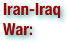
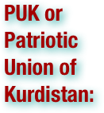

Ethnic Cleansing in Iraq: Terms
.pdf (. . . )


The al-Anfal Campaign, also known as Operation Anfal or simply Anfal, was a genocidal campaign against the Kurdish people (and many other ethnic groups) in Northern Iraq, led by the Iraqi regime of Saddam Hussein and headed by Ali Hassan al-Majid in the final stages of Iran-Iraq War. The campaign takes its name from Surat al-Anfal in the Qur'an, which was used as a code name by the former Iraqi Baathist regime for a series of systematic attacks against the Kurdish population of northern Iraq, conducted between 1986 and 1989 and culminating in 1988. The campaign also targeted other minority communities in Iraq including Shabaks, Yazidis, Jews, Mandeans, and many villages belonging to these ethnic groups were also destroyed. (wikipedia.org. Accessed July 27, 2011.)

Arabization describes a growing cultural influence on a non-Arab area that gradually changes into one that speaks Arabic and/or incorporates Arab culture. It was most prominently achieved during the 7th century Arabian Muslim conquests which spread the Arabic language, culture, and—having been carried out by Arabian Muslims as opposed to Arab Christians or Arabic speaking Jews—the religion of Islam to the lands they conquered. The result: some elements of Arabian origin combined in various forms and degrees with elements taken from conquered civilizations and ultimately denominated "Arab", as opposed to "Arabian". (wikipedia.org. Accessed July 27, 2011.)


The Arab Socialist Ba'ath Party (also spelled Ba'th or Baath which means "resurrection" or "renaissance") is a political party, mixing Arab nationalist and Arab socialist interests, opposed to Western imperialism and calling for the renaissance or resurrection of the Arab World and its unity in one united state. Its motto — "Unity, Liberty, Socialism" — refers to Arab unity, freedom from non-Arab control and interference. Its ideology of Arab socialism is notably separate in origins and practice from Marxism. The party was founded in Damascus in 1946 by the Syrian intellectuals Michel Aflaq, and Salah al-Bitar, and since its inception has established branches in different Arab countries, although the only countries it has ever held power in are Syria and Iraq. In Syria it has had a monopoly on political power since the party's 1963 coup. Ba'athists also seized power in Iraq in 1963, but were deposed some months later. They returned to power in a 1968 coup and remained the sole party of government until the 2003 Iraq invasion. Since then they have been banned in Iraq. (wikipedia.org. Accessed July 27, 2011.)

A ceasefire (or truce) is a temporary stoppage of a war in which each side agrees with the other to suspend aggressive actions. Ceasefires may be declared as part of a formal treaty, but they have also been called as part of an informal understanding between opposing forces. An armistice is a formal agreement to end fighting. (wikipedia.org. Accessed July 27, 2011.)

Chemical warfare involves using the toxic properties of chemical substances as weapons. This type of warfare is distinct from Nuclear warfare and Biological warfare, which together make up NBC, the military acronym for Nuclear, Biological, and Chemical (warfare or weapons). Neither of these falls under the term conventional weapons which are primarily effective due to their destructive potential. Chemical warfare does not depend upon explosive force to achieve an objective. Rather it depends upon the unique properties of the chemical agent weaponized. A lethal agent is designed to injure or incapacitate the enemy, or deny unhindered use of a particular area of terrain. Defoliants are used to quickly kill vegetation and deny its use for cover and concealment. It can also be used against agriculture and livestock to promote hunger and starvation. With proper protective equipment, training, and decontamination measures, the primary effects of chemical weapons can be overcome. Many nations possess vast stockpiles of weaponized agents in preparation for wartime use. The threat and the perceived threat have become strategic tools in planning both measures, and counter–measures. (wikipedia.org. Accessed July 27, 2011.)

A chemical weapon is a device that uses chemicals formulated to inflict death or harm to human beings. They are classified as weapons of mass destruction, and have been "condemned by the civilized world". CW have been used in past conflicts; and preparedness doctrine anticipates their potential for future use. Numerous international agreements are in force with regard to chemical weapons. Lethal unitary chemical agents and munitions are extremely volatile and hazardous chemical weapons stockpiled by many nations. The most dangerous of these are nerve agents GA, GB, and VX, and vesicant (blister) agents H, HT, and HD. All are in liquid form at normal room temperature. (wikipedia.org. Accessed July 27, 2011.)

In military tactics, close air support is defined as air action by fixed or rotary winged aircraft against hostile targets that are close to friendly forces, and which requires detailed integration of each air mission with fire and movement of these forces. (wikipedia.org. Accessed July 27, 2011.)

Deportation means the expulsion of a person or group of people from a place or country. Today it often refers to the expulsion of foreign nationals whereas the expulsion of nationals is called banishment, exile, or penal transportation. Deportation is an ancient practice: Khosrau I, Sassanid King of Persia, deported 292,000 citizens, slaves, and conquered people to the new city of Ctesiphon in 542 C.E. England deported religious objectors and criminals to America in large numbers before 1776, and transported them to Australia between 1788 and 1868. (wikipedia.org. Accessed July 27, 2011.)

The Dujail Massacre refers to the events following an assassination attempt against then Iraqi president, Saddam Hussein, on July 8, 1982, in the town of Dujail. Dujail, a town with a large Shiite population and up to 75,000 residents at the time of the incident is located 53 km (33 mi) from Baghdad in the predominantly Sunni Salaheddin province of Iraq. (wikipedia.org. Accessed July 27, 2011.)


An ethnic group (or ethnicity) is a group of people whose members identify with each other, through a common heritage, often consisting of a common language, a common culture (often including a shared religion) and an ideology that stresses common ancestry or endogamy. Another definition is "...a highly biologically self-perpetuating group sharing an interest in a homeland connected with a specific geographical area, a common language and traditions, including food preferences, and a common religious faith". Members of an ethnic group are conscious of belonging to an ethnic group; moreover ethnic identity is further marked by the recognition from others of a group's distinctiveness. Processes that result in the emergence of such identification are called ethnogenesis. (wikipedia.org. Accessed July 27, 2011.)

Gendercide is gender-selective mass killing. The term was first used by Mary Anne Warren in her 1985 book, Gendercide: The Implications of Sex Selection. Warren drew "an analogy between the concept of genocide" and what she called "gendercide." (wikipedia.org. Accessed July 27, 2011.)

Genocide is defined as "the deliberate and systematic destruction, in whole or in part, of an ethnic, racial, religious, or national group", though what constitutes enough of a "part" to qualify as genocide has been subject to much debate by legal scholars. While a precise definition varies among genocide scholars, a legal definition is found in the 1948 United Nations Convention on the Prevention and Punishment of the Crime of Genocide (CPPCG). Article 2 of this convention defines genocide as "any of the following acts committed with intent to destroy, in whole or in part, a national, ethnical, racial or religious group, as such: killing members of the group; causing serious bodily or mental harm to members of the group; deliberately inflicting on the group conditions of life, calculated to bring about its physical destruction in whole or in part; imposing measures intended to prevent births within the group; [and] forcibly transferring children of the group to another group." (wikipedia.org. Accessed July 27, 2011.)

The Convention on the Prevention and Punishment of the Crime of Genocide was adopted by the United Nations General Assembly on 9 December 1948 as General Assembly Resolution 260. The Convention entered into force on 12 January 1951. It defines genocide in legal terms, and is the culmination of years of campaigning by lawyer Raphael Lemkin. Yaur Auron writes "When Raphael Lemkin coined the word genocide in 1944 he cited the 1915 annihilation of Armenians as a seminal example of genocide". All participating countries are advised to prevent and punish actions of genocide in war and in peacetime. The number of states that have ratified the convention is currently 140. (wikipedia.org. Accessed July 27, 2011.)

Guerrilla warfare is a form of irregular warfare and refers to conflicts in which a small group of combatants including, but not limited to, armed civilians (or "irregulars") use military tactics, such as ambushes, sabotage, raids, the element of surprise, and extraordinary mobility to harass a larger and less-mobile traditional army, or strike a vulnerable target, and withdraw almost immediately. (wikipedia.org. Accessed July 27, 2011.)

Human rights are "basic rights and freedoms that all people are entitled to regardless of nationality, sex, national or ethnic origin, race, religion, language, or other status." Human rights are conceived as universal and egalitarian, with all people having equal rights by virtue of being human. These rights may exist as natural rights or as legal rights, in both national and international law. The doctrine of human rights in international practice, within international law, global and regional institutions, in the policies of states and the activities of non-governmental organizations has been a cornerstone of public policy around the world. It has been said that: "if the public discourse of peacetime global society can be said to have a common moral language, it is that of human rights." Despite this, the strong claims made by the doctrine of human rights continue to provoke considerable skepticism, debates about the content, nature and justifications of human rights continue to this day. (wikipedia.org. Accessed July 27, 2011.)


The Iran–Iraq War, also known as the Imposed War and Holy Defense in Iran, Saddām's Qādisiyyah in Iraq, and the (First) Persian Gulf War, was an armed conflict between the armed forces of Iraq and Iran, lasting from September 1980 to August 1988, making it the longest conventional war of the twentieth century. It was initially referred to in English as the "Persian Gulf War" prior to the "Gulf War" of 1990. The war began when Iraq invaded Iran, launching a simultaneous invasion by air and land into Iranian territory on 22 September 1980 following a long history of border disputes, and fears of Shia insurgency among Iraq's long-suppressed Shia majority influenced by the Iranian Revolution. Iraq was also aiming to replace Iran as the dominant Persian Gulf state. Although Iraq hoped to take advantage of the revolutionary chaos in Iran and attacked without formal warning, they made only limited progress into Iran and within several months were repelled by the Iranians who regained virtually all lost territory by June 1982. For the next six years, Iran was on the offensive. Despite calls for a ceasefire by the United Nations Security Council, hostilities continued until 20 August 1988. The war finally ended with a United Nations brokered ceasefire in the form of United Nations Security Council Resolution 598, which was accepted by both sides. It took several weeks for the Iranian armed forces to evacuate Iraqi territory to honor pre-war international borders between the two nations (1975 Algiers Agreement). The last prisoners of war were exchanged in 2003. (wikipedia.org. Accessed July 27, 2011.)

The Jews, also known as the Jewish people, are a nation and ethnoreligious group originating in the Israelites or Hebrews of the Ancient Near East. The Jewish ethnicity, nationality, and religion are strongly interrelated, as Judaism is the traditional faith of the Jewish nation. Converts to Judaism, whose status as Jews within the Jewish ethnos is equal to those born into it, have been absorbed into the Jewish people throughout the millennia. (wikipedia.org. Accessed July 27, 2011.)

The Kurdistan Democratic Party (KDP) is one of the main Kurdish parties in Iraqi Kurdistan. It was founded in 1946 in Mahabad in Iranian Kurdistan. (wikipedia.org. Accessed July 27, 2011.)

Iraqi Kurdistan or Kurdistan Region is an autonomous region of Iraq. It borders Iran to the east, Turkey to the north, Syria to the west and the rest of Iraq to the south. The regional capital is Arbil, known in Kurdish as Hewlêr. The region is officially governed by the Kurdistan Regional Government. The establishment of the Kurdistan Region of Iraq dates back to the March 1970 autonomy agreement between the Kurdish opposition and the Iraqi government after years of heavy fighting. The Iran-Iraq war during the 1980s and the Anfal genocide campaign of the Iraqi army devastated the population and nature of Iraqi Kurdistan. Following the 1991 uprising of the Iraqi people against Saddam Hussein, many Kurds were forced to flee the country to become refugees in bordering regions of Iran and Turkey. A northern no-fly zone was established following the First Gulf War in 1991 to facilitate the return of Kurdish refugees. As Kurds continued to fight government troops, Iraqi forces finally left Kurdistan in October 1991, leaving the region to function de facto independently; however, neither of the two major Kurdish parties had at any time declared independence and Iraqi Kurdistan continues to view itself as an integral part of a united Iraq but one in which it administers its own affairs. The 2003 invasion of Iraq and the subsequent political changes led to the ratification of a new Constitution of Iraq in 2005. The new Iraqi constitution defines Iraqi Kurdistan as a federal entity of Iraq, and establishes Arabic and Kurdish as Iraq's joint official languages. (wikipedia.org. Accessed July 27, 2011.)

The Kurdish people, or Kurds, are an Iranic people native to the Middle East, mostly inhabiting a region known as Kurdistan, which includes adjacent parts of Iran, Iraq, Syria, and Turkey. They speak the Kurdish language, which is a member of the Iranian branch of Indo-European languages. The Kurds number about 30 million, the majority living in the Middle East, with significant Kurdish diaspora communities in the cities of western Turkey, in Armenia, Georgia, Israel, Azerbaijan, Russia, Lebanon and, in recent decades, some European countries and the United States. The Kurds are an indigenous ethnic minority in countries where the Kurdistan region is located, although they have enjoyed partial autonomy in Iraqi Kurdistan since 1991. An irredentist movement pushes for the creation of a Kurdish nation state. (wikipedia.org. Accessed July 27, 2011.)

Mandaeism or Mandaeanism is a Gnostic religion with a strongly dualistic worldview. Its adherents, the Mandaeans, revere Adam, Abel, Seth, Enosh, Noah, Shem, Aram and especially John the Baptist. They are sometimes identified with the Sabian religion, particularly in an Arabian context, but actually Mandaeism and Manichaeism seem to be independent – to some degree opposing – developments out of the mainstream Sabian religious community, which is extinct today. (wikipedia.org. Accessed July 27, 2011.)

The sulfur mustards, or sulphur mustards, commonly known as mustard gas, are a class of related cytotoxic, vesicant chemical warfare agents with the ability to form large blisters on exposed skin. Pure sulfur mustards are colorless, viscous liquids at room temperature. However, when used in impure form, such as warfare agents, they are usually yellow-brown in color and have an odor resembling mustard plants, garlic or horseradish, hence the name. Mustard gas was originally assigned the name LOST, after the scientists Lommel and Steinkopf, who developed a method for the large-scale production of the agent for the German Army in 1916. Mustard agents are regulated under the 1993 Chemical Weapons Convention (CWC). Three classes of chemicals are monitored under this Convention, with sulfur and nitrogen mustard grouped in Schedule 1, as substances with no use other than chemical warfare. Mustard agents can be deployed on the battlefield via spraying from aircraft, or more typically by means of air-dropped bombs or artillery shells. (wikipedia.org. Accessed July 27, 2011.)

Nerve agents are a class of phosphorus-containing organic chemicals (organophosphates) that disrupt the mechanism by which nerves transfer messages to organs. The disruption is caused by blocking acetylcholinesterase, an enzyme that normally relaxes the activity of acetylcholine, a neurotransmitter. As chemical weapons, they are classified as weapons of mass destruction by the United Nations according to UN Resolution 687 (passed in April 1991) and their production and stockpiling was outlawed by the Chemical Weapons Convention of 1993; the Chemical Weapons Convention officially took effect on April 29, 1997. Poisoning by a nerve agent leads to contraction of pupils, profuse salivation, convulsions, involuntary urination and defecation and eventual death by asphyxiation as control is lost over respiratory muscles. Some nerve agents are readily vaporized or aerosolized and the primary portal of entry into the body is the respiratory system. Nerve agents can also be absorbed through the skin, requiring that those likely to be subjected to such agents wear a full body suit in addition to a respirator. (wikipedia.org. Accessed July 27, 2011.)

An offensive is a military operation that seeks through aggressive projection of armed force to occupy territory, gain an objective or achieve some larger strategic, operational or tactical goal. Another term for an offensive often used by the media is 'invasion', or the more general 'attack'. (wikipedia.org. Accessed July 27, 2011.)


Population transfer is the movement of a large group of people from one region to another by state policy or international authority, most frequently on the basis of ethnicity or religion. Banishment or exile is a similar process, but is forcibly applied to individuals and groups. Often the affected population is transferred by force to a distant region, perhaps not suited to their way of life, causing them substantial harm. In addition, the loss of all immovable property and, when rushed, the loss of substantial amounts of movable property, is implied. (wikipedia.org. Accessed July 27, 2011.)


The Patriotic Union of Kurdistan (PUK) is a Kurdish political party in Iraqi Kurdistan. The Patriotic Union of Kurdistan (PUK) was founded on June 1, 1975, by coordinations between Jalal Talabani and Nawshirwan Mustafa. Mustafa was the leader of an independent socialist movement that adopted Kurdish nationalism called "Komeley Renjderan," some two months after the collapse of the Kurdish rebellion of 1974-1975 created a moment of profound crisis for the Kurdish people in Iraqi Kurdistan, the organization's aim was to revitalize resistance and to rebuild and redirect Kurdish society along modern and democratic lines. Talabani, a former student leader, lawyer, journalist and resistance leader, has been the Secretary General of the PUK since its founding in 1975. (wikipedia.org. Accessed July 27, 2011.)


Sarin, or GB is an organophosphorus compound with the formula [(CH3)2CHO]CH3P(O)F. It is a colorless, odorless liquid, which is used as a chemical weapon. It has been classified as a weapon of mass destruction in UN Resolution 687. Production and stockpiling of sarin was outlawed by the Chemical Weapons Convention of 1993 where it is classified as a Schedule 1 substance. (wikipedia.org. Accessed July 27, 2011.)

Shabak people are an ethnic and religious minority group living in northern Iraq, who live mainly in the villages of Ali Rash, Khazna, Yangidja, and Tallara in Sinjar district in the province of Ninawa in northern Iraq. Their language, Shabaki, is a Northwestern Iranian language very close to Hawraman and Goran Kurdish dialect. A majority of Shabak people identify themselves as ethnically Kurdish. Their population was estimated at around 15,000 in the 1970s., However it is believed to be more like 60,000 today. Shabaks consist of three different ta'ifs or sects: the Bajalan, Dawoody and Zengana (two Kurdish tribal confederations that also encompass some Shabak communities) and the Shabak proper. Shabaks follow an independent religion, related to but distinct from orthodox Islam and Christianity. It is also claimed that they are descendants of Qizilbash from the army of Shah Ismail. (wikipedia.org. Accessed July 27, 2011.)

Strategic bombing is a military strategy used in a total war with the goal of defeating an enemy nation-state by destroying its economic ability and public will to wage war rather than destroying its land or naval forces. It is a systematically organized and executed attack from the air which can utilize strategic bombers, long- or medium-range missiles, or nuclear-armed fighter-bomber aircraft to attack targets deemed vital to an enemy's war-making capacity. (wikipedia.org. Accessed July 27, 2011.)

A summary execution is a variety of execution in which a person is killed on the spot without trial or after a show trial. Summary executions are practiced by the police, military, and paramilitary organizations and are associated with guerrilla warfare, counter-insurgency, terrorism, and criminality. (wikipedia.org. Accessed July 27, 2011.)

Sura Al-Anfal ("The Spoils of War") is the eighth chapter of the Qur'an, with 75 verses. It is a Medinan sura, completed after the Battle of Badr. It forms a pair with the next sura, At-Tawba. (wikipedia.org. Accessed July 27, 2011.)

The Yazidi are members of a Kurdish religion with ancient Indo-Iranian roots. They are primarily a Kurdish-speaking people living in the Mosul region of northern Iraq, with additional communities in Transcaucasia, Armenia, Turkey, and Syria in decline since the 1990s – their members emigrating to Europe, especially to Germany. Their religion, Yazidism, is a branch of Yazdânism, and is seen as a highly syncretic complex of local Kurdish beliefs and Islamic Sufi doctrine introduced to the area by Sheikh Adi ibn Musafir in the 12th century. The Yazidi believe in God as creator of the world, which he placed under the care of seven holy beings or angels, the chief of whom is Melek Taus, the Peacock Angel. (wikipedia.org. Accessed July 27, 2011.)